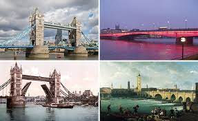
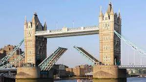

TOWER BRIDGE
LOCATION
ㅤTower Bridge is located in London, UK. It crosses the River Thames and is situated next to the Tower of London, one of the city's most popular tourist attractions. Tower Bridge is one of London's most recognizable and iconic landmarks.
CURIOSITIES
ㅤ -Iconic Structure: Tower Bridge is one of the most famous and iconic bridges in the world, known for its unique and distinctive architecture.
ㅤ -Porthole: The bridge has central sections that can be lifted to allow large vessels to pass through the River Thames.
ㅤ -Hydraulic mechanism: The opening of the bridge is carried out by a hydraulic system that lifts the mobile sections. This mechanism is used about a thousand times a year.
ㅤ -Importance for navigation: Tower Bridge plays a crucial role in the navigation route on the River Thames, allowing ships to pass under it.
ㅤ -Exhibition and tour: The bridge houses an internal exhibition that tells its story and offers visitors the opportunity to walk on a glass floor and enjoy panoramic views of London.
ㅤ -Special Events: Tower Bridge is often lit up for special occasions and celebratory events, adding a touch of spectacle and beauty to the London skyline.
ㅤ -Suspension Bridge: Despite its appearance, the Tower Bridge is not a suspension bridge. Its towers and structure are designed to support the weight of the lifted mobile sections.
ㅤ -Movie and television scenes: Tower Bridge has served as a backdrop for numerous film productions and television shows, contributing to its fame and global recognition.

HISTORY
ㅤ Construction on Tower Bridge began in 1886 and was completed in 1894. It was designed by Horace Jones and Sir John Wolfe Barry, in response to the need for a new bridge across the River Thames to allow ships to pass.
Tower Bridge is built in a Victorian Gothic style with two impressive towers and a suspension bridge in the middle. Its most striking feature is the central sections that can be lifted to allow the passage of large vessels.
ㅤ During its construction, more than 400 workers were involved in the project. The structure was assembled on site and, once complete, became an engineering marvel of its time.
Tower Bridge was officially opened on June 30, 1894 by Queen Victoria. On that occasion, a procession of ships passed under the raised bridge, demonstrating its functionality.
Over the years, Tower Bridge has undergone numerous restorations and renovations to preserve its structure and functionality. Today, it remains an important shipping route on the River Thames and an iconic symbol of London.
CULTURAL IMPACT
ㅤ Tower Bridge has a significant cultural impact as an iconic London icon and popular tourist destination. It inspires artists and photographers, appears in film and literature, and is used at special events and celebrations. The bridge represents a combination of innovative engineering and aesthetic beauty, standing as a symbol of London and its rich history.

TIPS FOR VISITORS
-Plan your visit in advance and avoid busy times.
-Purchase tickets in advance to avoid queues at the entrance.
-Explore the indoor exhibit to learn about the bridge's history.
-Watch the bridge open to witness the unique spectacle.
-Enjoy panoramic views of the River Thames from the bridge.
-Combine your visit to Tower Bridge with a visit to the nearby Tower of London.
-Explore the surrounding areas such as Borough Market and the south bank of the river.
-Try the local cuisine at the area's restaurants and cafes.
-Shop for unique souvenirs at the Tower Bridge Gift Shop.
-Keep an eye out for special events that may occur during your visit.